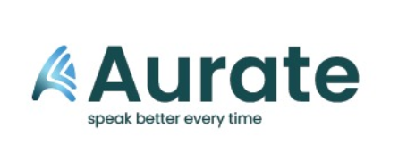

Aurate — Orator Trainer (Demo)
Aurate
speak better every time — Record, transcribe (browser), get coaching feedback, and track progress.
Live Practice
Pick a prompt, press Start, speak naturally.
● idle
60s: Personal intro
45s: Explain your favourite concept
30s: Pitch a product
60s: Tell a brief story
30s: Explain like I'm 10
Start
Stop
Save session
Export CSV
(transcript appears here)